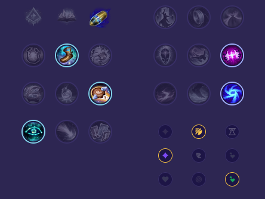

Starter: Ostrze Dorana Mikstura Zdrowia Core Bulid: Kolekcjoner Nagolenniki Berserkera Ostrze Nieskończoności Full Bulid: Pozdrowienia Lorda Dominika Krwiopijec Ognista Armata

Słaby przeciwko: - Zaahen - Sett - Mordekaiser Dobry przeciwko: - Warwick - Darius - Pantheon